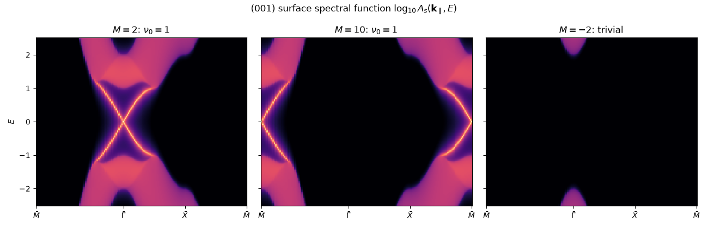

Note
Go to the end to download the full example code.
Three-Dimensional Topological Insulators: the Surface Dirac Cone#
In 2007 Fu, Kane and Mele, Moore and Balents, and Roy showed that the \(\mathbb{Z}_2\) topology of the quantum spin Hall effect has a 3D sequel. A time-reversal-invariant insulator in three dimensions carries four \(\mathbb{Z}_2\) indices, and the strong index \(\nu_0\) – with inversion symmetry, the product of the parities of the occupied Kramers pairs at all eight time-reversal-invariant momenta – forces every surface to host an odd number of Dirac cones: metallic, spin-momentum-locked surface states that no time-reversal-invariant perturbation can gap. Hsieh et al. saw them by photoemission in Bi1-xSbx (2008), then Xia et al. and Zhang et al. found the simplest case, a single cone, in Bi2Se3 (2009).
The model: s- and p-like orbitals with spin on a cubic lattice,
the lattice regularization of the Bi2Se3 model. The band inversion \(m < 0\) at some of the eight momenta \((0\text{ or }\pi)^3\) sets the four indices.
The photoemission picture is the surface spectral function
\(A_s(\mathbf{k}_\parallel, E)\) of the semi-infinite crystal
(surface_spectral_function(), from the Lopez
Sancho-Rubio decimation): the bulk bands projected on the surface
Brillouin zone, plus sharp lines for the states bound to the surface.
import numpy as np
import matplotlib.pyplot as plt
from tbkit.lattice import Lattice
from tbkit.kspace import KSpace, PAULI
cubic = [(1., 0., 0.), (0., 1., 0.), (0., 0., 1.)]
# orbitals: (s, up), (s, down), (p, up), (p, down) -> two "sites" with spin
lat = Lattice(unit_cell=[{'tag': 's', 'r0': (0., 0., 0.)}, {'tag': 'p', 'r0': (0., 0., 0.)}],
prim_vec=cubic)
SIGMA = [PAULI['x'], PAULI['y'], PAULI['z']]
INVERSION = np.kron(np.diag([1., -1.]), np.eye(2)) # s even, p odd
def topological_insulator(M):
ti = KSpace(lat, spin=True)
hops = []
for d in range(3):
R = tuple(int(x) for x in np.eye(3, dtype=int)[d])
# 2 cos k_i tau_z, and sin k_i tau_x sigma_i
hops += [{'i': 0, 'j': 0, 'R': R, 't': PAULI['0']}, {'i': 1, 'j': 1, 'R': R, 't': -PAULI['0']},
{'i': 0, 'j': 1, 'R': R, 't': -0.5j * SIGMA[d]},
{'i': 1, 'j': 0, 'R': R, 't': -0.5j * SIGMA[d]}]
ti.set_hopping(hops)
ti.set_onsite({'s': (M - 6) * PAULI['0'], 'p': -(M - 6) * PAULI['0']})
return ti
k = np.array([0.3, -0.7, 1.1])
m = 2. - 2 * (3 - np.cos(k).sum())
h = m * np.kron(PAULI['z'], PAULI['0']) + sum(np.sin(k[d]) * np.kron(PAULI['x'], SIGMA[d]) for d in range(3))
assert np.allclose(topological_insulator(2.).get_ham(k), h)
The four Z2 indices#
\(m\) is \(M\) at \(\Gamma\), \(M - 4\) at the three
\(X\), \(M - 8\) at the three \(M\) and \(M - 12\) at
\(R\). The strong index counts the inverted momenta modulo 2: one
for \(0 < M < 4\) (at \(\Gamma\)), four for \(4 < M < 8\),
seven for \(8 < M < 12\). The parity criterion gives only
\(\nu_0\); z2_indices_3d() gives all four,
\((\nu_0;\nu_1\nu_2\nu_3)\), from the Wannier-centre flow on the six
time-reversal-invariant planes, without using inversion. They tell the
weak topological insulator \((0;111)\) of \(4 < M < 8\) – quantum
spin Hall layers stacked along (111), whose planes \(k_i = \pi\)
each hold one inverted momentum – from the trivial insulator, which the
strong index alone cannot.
phases = {-2.: (0, 0, 0, 0), 2.: (1, 0, 0, 0), 6.: (0, 1, 1, 1), 10.: (1, 1, 1, 1)}
for M, indices in phases.items():
ti = topological_insulator(M)
assert ti.parity_z2(INVERSION, [0, 1]) == indices[0]
assert ti.z2_indices_3d([0, 1], nk=60, nk_perp=31) == indices
print('M = {:5.1f}: (nu_0; nu_1 nu_2 nu_3) = ({}; {}{}{})'.format(M, *indices))
M = -2.0: (nu_0; nu_1 nu_2 nu_3) = (0; 000)
M = 2.0: (nu_0; nu_1 nu_2 nu_3) = (1; 000)
M = 6.0: (nu_0; nu_1 nu_2 nu_3) = (0; 111)
M = 10.0: (nu_0; nu_1 nu_2 nu_3) = (1; 111)
The surface Dirac cone#
The (001) surface, along \(\bar{M}-\bar{\Gamma}-\bar{X}-\bar{M}\)
of the surface zone. Deep inside the crystal (bulk=True) there is
nothing in the gap \(|E| < 1\); on the surface of the strong
topological insulator (\(M = 2\)) a single Dirac cone crosses it,
centred at \(\bar\Gamma\), the projection of the inverted momentum,
with velocity 1.
nk = 60
corners = [np.array([np.pi, np.pi, 0.]), np.zeros(3), np.array([np.pi, 0., 0.]),
np.array([np.pi, np.pi, 0.])]
path = np.concatenate([np.linspace(corners[i], corners[i + 1], nk, endpoint=False)
for i in range(3)] + [corners[-1:]])
dist = np.concatenate([[0.], np.cumsum(np.linalg.norm(np.diff(path, axis=0), axis=1))])
energies = np.linspace(-2.5, 2.5, 201)
eta = 0.02
gap = np.abs(energies) < 0.6 # inside the gap, beyond the broadened bulk tails
ti = topological_insulator(2.)
surface = ti.surface_spectral_function(path, energies, direction=2, eta=eta)
bulk = ti.surface_spectral_function(path, energies, direction=2, eta=eta, bulk=True)
assert bulk[:, gap].max() < 0.05
gamma = nk # index of Gamma-bar on the path
zero = np.argmin(np.abs(energies))
assert surface[gamma, zero] > 10.
print('At Gamma-bar, E = 0: A_surface = {:.1f}, A_bulk = {:.3f}'.format(surface[gamma, zero],
bulk[gamma, zero]))
# one cone: at each energy in the gap, exactly two peaks along Gamma-bar-X-bar,
# at k = |E| (and its mirror image along M-bar-Gamma-bar)
for e in (0.2, 0.4, -0.4):
col = surface[:, np.argmin(np.abs(energies - e))]
peaks = [i for i in range(1, len(col) - 1) if col[i] > max(col[i - 1], col[i + 1]) and col[i] > 1.]
assert len(peaks) == 2, peaks
k_peaks = np.abs(dist[peaks] - dist[gamma])
assert np.allclose(k_peaks, abs(e), atol=0.06), k_peaks
print('One surface Dirac cone at Gamma-bar, velocity 1.')
At Gamma-bar, E = 0: A_surface = 28.3, A_bulk = 0.013
One surface Dirac cone at Gamma-bar, velocity 1.
Where the cone sits, and when there is none#
For \(8 < M < 12\) the inversion has moved to \(R = (\pi,\pi,\pi)\), and the cone to its projection \(\bar{M}\). In the trivial insulator (\(M = -2\)) the gap stays empty on the surface too.
surface_10 = topological_insulator(10.).surface_spectral_function(path, energies, direction=2, eta=eta)
assert surface_10[0, zero] > 10. and surface_10[gamma, zero] < 0.05
surface_triv = topological_insulator(-2.).surface_spectral_function(path, energies, direction=2, eta=eta)
assert surface_triv[:, gap].max() < 0.05
print('M = 10: the cone sits at M-bar. M = -2: no surface state in the gap.')
fig, axes = plt.subplots(1, 3, figsize=(13, 4.2), sharey=True)
titles = [r'$M = 2$: $\nu_0 = 1$', r'$M = 10$: $\nu_0 = 1$', r'$M = -2$: trivial']
ticks = [dist[0], dist[gamma], dist[2 * nk], dist[-1]]
for ax, spec, title in zip(axes, (surface, surface_10, surface_triv), titles):
ax.pcolormesh(dist, energies, np.log10(spec.T + 1e-3), cmap='magma', vmin=-2, vmax=1.5,
shading='auto')
ax.set_xticks(ticks, [r'$\bar{M}$', r'$\bar{\Gamma}$', r'$\bar{X}$', r'$\bar{M}$'])
ax.set_title(title)
axes[0].set_ylabel('$E$')
fig.suptitle(r'(001) surface spectral function $\log_{10} A_s(\mathbf{k}_\parallel, E)$')
fig.set_layout_engine('tight')

M = 10: the cone sits at M-bar. M = -2: no surface state in the gap.
Total running time of the script: (0 minutes 3.921 seconds)